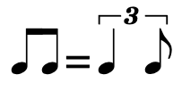
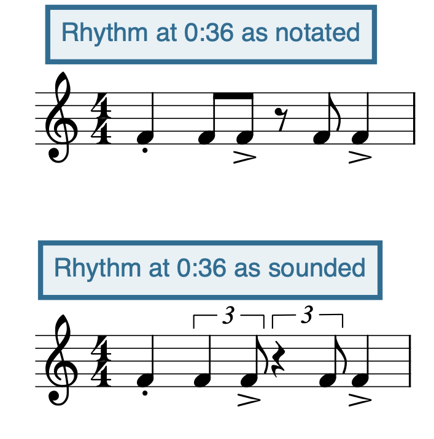
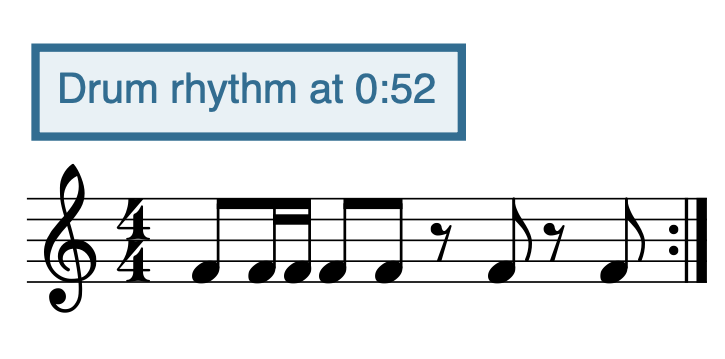

Open Music Theory：繁體中文版
搖擺節奏
重點整理
- 搖擺八分音符通常寫成一般的均分八分音符，演奏時卻不等長：可以近似理解為三連音節奏，前一音約為後一音的兩倍長。
- 反拍重音（backbeat）是在四拍子中強調第二、第四拍所形成的切分，在爵士樂中很常見。
- 當拍節原有的層級感受到擾動，就會出現切分。
爵士樂有許多鮮明的節奏慣用法，構成它的風格特色。本章介紹特別重要的搖擺八分音符與反拍重音，並進一步討論切分。
查看英文原文
Key Takeaways
- Swing eighths are notated as regular straight eighths but performed unevenly, in a quasi-triplet rhythm where the first note is twice as long as the second.
- Backbeat, a syncopation created through accent on beats 2 and 4 of a quadruple meter, is common in jazz.
- Syncopation occurs when the hierarchy of the meter is obscured.
Jazz has many characteristic uses of rhythm that define it as a genre. This chapter introduces two especially signficant rhythms—swing eighths and the backbeat—and discusses syncopation generally.
搖擺八分音符
{kind=link}

圖左為一對均分八分音符，等號右側以三連音括號中的四分音符加八分音符，示意約2:1的長短比例。
括號上的3是三連音標記。
{kind=link}

- Rhythm at 0:36 as notated＝0:36處的記譜節奏；
- Rhythm at 0:36 as sounded＝0:36處近似實際演奏的節奏。
- 上方以一般八分音符與休止記譜；
- 下方用三連音的四分／八分組合，呈現八分音符與八分休止的長短分配。
第一拍斷奏點、第二拍後半與第四拍的重音符號保留。
此圖是原章對該錄音的節奏示意。
{kind=link}

Drum rhythm at 0:52＝0:52處的鼓節奏。
- 4/4拍；
- 第一拍為八分音符加兩個十六分音符，第二拍兩個八分音符，第三與第四拍各是八分休止加八分音符。
小節末有反覆記號。
此處八分音符採均分，不作搖擺。
音樂劇《Anything Goes》的序曲，同時包含均分與搖擺八分音符的段落。開頭幾分鐘採搖擺節奏；0:36處，全體樂器一起奏出搖擺八分音符，最容易聽出來，見例2。聆聽時，試著跟著搖擺八分音符打拍；速度很快，因此手也得打得相當快。
再與0:52開始的中段比較，見例3。這裡改成均分八分音符，律動感明顯不同。聆聽時跟著均分八分音符打拍；這一段的速度，比開頭搖擺段落慢得多。
小號短暫過渡後，1:39開始的第三部分又回到搖擺八分音符；可以從爵士鼓的腳踏鈸聲部聽出這個節奏。
例1的三連音記法，是常見的搖擺節奏說明方式；但實際上，八分音符的精確比例，會隨作品與演奏者而不同。一般而言，快速演奏傾向比較接近均分，慢速演奏則往往採用更明顯的長短差。比較 Dizzy Gillespie 的〈Eternal Triangle〉與 Count Basie 的〈Duet〉：前者的搖擺比例較均勻，後者則較不平均。
查看英文原文
Swing eighths
One of the most recognizable features of swing rhythms is swung eighth notes. Swing eighths are performed as uneven eighth notes in a quasi-triplet rhythm, shifting the proportion from 1:1 to, roughly, 2:1—that is, the first eighth note is about twice as long as the second eighth note. This is illustrated with notation in Example 1.
While in some sense it may be more accurate to notate the eighth notes of a jazz tune as a triplet rhythm as notated in Example 1, imagine how cluttered that would be! Instead, swing eighth notes in jazz are always written as straight eighth notes, and performers are expected to know to swing them.
The overture from the musical Anything Goes contains passages with both straight and swing eighths. The first few minutes are swung; this is easiest to hear at 0:36 when all the instruments in the ensemble play swing eighths together (Example 2).While listening, tap along to the swing eighths—and note that the tempo is very brisk, so you'll be tapping quite quickly.
Contrast this with the straight eighths in the middle section of the overture, which begins at 0:52 (Example 3). The feel changes dramatically during this straight section. As you listen, tap along to the straight eighths, which are at a considerably slower tempo than the first part's swing eighths.
After a quick transition in the trumpets, swing eighths return for the third part of the overture, which begins at 1:39. The swing eighths are audible in the hi-hat cymbal of the drumset.
The triplet rhythm notated in Example 1 is a common way to explain swing, but in reality, the exact ratio of swing eighths varies from piece to piece and from performer to performer. Generally speaking, faster tempos tend to be more straight and slower tempos tend to employ a more dramatic swing. Compare the swing of "Eternal Triangle" by Dizzy Gillespie and "Duet" by Count Basie—the former has a more even swing rhythm, while the latter has a more uneven swing.
反拍重音（Backbeat）
另一個重要的爵士節奏特色是反拍重音，也就是在四拍子中強調第二、第四拍。這與古典音樂常強調第一、第三拍的方式相反。不過，第一拍在爵士樂中仍然重要：和弦常在這裡改變，根音也常在這裡出現；只是它不一定是最響的一拍。
反拍重音與搖擺八分音符，是標準搖擺鼓型的重要成分，見例4。閉合的腳踏鈸強調反拍，節奏鈸（ride cymbal）則奏出搖擺八分音符。鼓型變化很多，而且通常即興演奏，但多數爵士鼓型都能找到這兩個成分。
例4。包含搖擺八分音符與反拍重音的標準搖擺鼓型。
跟著爵士曲打拍時，可以試著打在第二、第四拍的反拍重音，而不只打在每小節第一拍。
查看英文原文
Backbeat
The next most significant rhythmic feature of jazz is the backbeat. The backbeat is an accent on beats 2 and 4 of a quadruple meter. This is the opposite of the typical accent structure of classical music, where beats 1 and 3 are usually the most accented. (Beat 1 is still important in jazz, though—that's still usually where chord changes occur and roots of chords are sounded. It just may not be the loudest beat.)
The backbeat and the swing eighth together make up an important part of a standard swing drum beat (Example 4). The backbeat is accented with the closed hi-hat cymbal, while the swing eighths are played on the ride cymbal. Drum beats vary widely and are typically improvised, but these are two components you will find in most jazz drum patterns.
Example 4. Standard swing drum beat with swing eighths and a backbeat.
When tapping along with jazz tunes, try tapping along to the backbeat, rather than the downbeat.
理解切分之前，要先掌握拍節的基本概念，可參閱〈單拍子〉與〈複拍子〉。當等距的拍點暗示出層級感時，就形成拍節。例如，多數爵士樂所採的 [latex]\mathbf{^4_4}[/latex] 拍，是由四個等距四分音符拍點構成：第一拍最重要，第三拍次之，第二與第四拍相對較次要。這裡的「重要」，指和弦變換、轉調等重要事件常發生在第一拍；第三拍也可能出現，但較少；第二或第四拍出現和弦變換，則相對不常見。
當這份層級感受到某種方式的擾動，就會產生切分。做法很多，反拍重音就是其中一種：在第二、第四拍發聲，而不在第一、第三拍發聲，強調 [latex]\mathbf{^4_4}[/latex] 拍中原本相對較弱的位置。爵士樂另一種常見切分，是強調一對八分音符中位於拍子後半的第二個音，如前面的例2。
除了以重音擾動拍點感，也能用休止與延音線製造切分，例如讓旋律避開小節第一拍才開始。例5就是透過休止與延音線形成切分的例子。
- Aebersold, Jamey。2000。《爵士手冊》（Jazz Handbook）。印第安納州 New Albany：Jamey Aebersold Jazz。
- Straus, Joseph N.。2012。《音樂要素》（Elements of Music），第3版。紐澤西州 Upper Saddle River：Pearson。
媒體出處
- 搖擺八分音符（Swung eighths），© Megan Lavengood，採 CC BY-SA 4.0：姓名標示—相同方式分享授權。
- Anything Goes 1，© Megan Lavengood，採 CC BY-SA 4.0：姓名標示—相同方式分享授權。
- Anything Goes 2，© Megan Lavengood，採 CC BY-SA 4.0：姓名標示—相同方式分享授權。
查看英文原文
Syncopation
Before understanding syncopation, it is important to understand meter more generally (refer to the chapters on simple and compound meter). Meter emerges when a series of equally spaced pulses imply a sense of hierarchy. For example, [latex]\mathbf{^4_4}[/latex] time, which most jazz is in, is a series of four quarter notes (equally distant beats) in which beat 1 is most important, beat 3 less important, and beats 2 and 4 least important of all. "Importance" here means that important things happen on beat 1: things like chord changes, key changes, and so on. These important things might also happen on beat 3, but it is less common, and it's relatively unusual to see chord changes on beat 2 or 4.
Syncopation occurs when this sense of hierarchy is subverted in some way. There are many ways to achieve this subversion, and the backbeat is actually one such example. By sounding on beats 2 and 4, but not on beats 1 and 3, the backbeat creates syncopation by accenting the less important beats of the [latex]\mathbf{^4_4}[/latex] meter. Another common jazz syncopation is accenting the second offbeat eighth of an eighth-note pair, as in Example 2 above.
In addition to accents that obscure the beat, syncopation can also be created through rests and ties: for example, avoiding downbeats when beginning melodic lines. An example of syncopation created with rests and ties is in Example 5.
Example 5. Syncopation in Carla Bley, "Donkey" (1976).
-
Aebersold, Jamey. 2000. Jazz Handbook. New Albany, IN: Jamey Aebersold Jazz.
- Straus, Joseph N. 2012. Elements of Music. 3rd ed. Upper Saddle River, NJ: Pearson.
- Swing Rhythms video (.mscz; PDFs for C instruments, B♭ instruments, E♭ instruments, F instruments, and bass clef instruments). Asks students to make a video with a partner performing idiomatic swing rhythms. Download backing track
- Jazz Rhythms by Jamey Aebersold (.pdf, .docx). Make a recording in which you perform these rhythms. Pick three rhythms that create syncopation in different ways, and explain how the beat is obscured to create syncopation (through ties? rests? etc.).
Media Attributions
- Swung eighths © Megan Lavengood is licensed under a CC BY-SA (Attribution ShareAlike) license
- Anything Goes 1 © Megan Lavengood is licensed under a CC BY-SA (Attribution ShareAlike) license
- Anything Goes 2 © Megan Lavengood is licensed under a CC BY-SA (Attribution ShareAlike) license